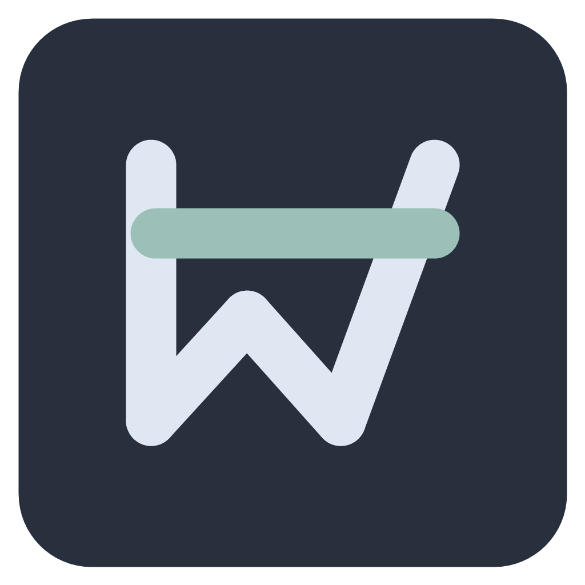

抬眼，就知道
当前的安排和剩余时间，留在手边。
不用一次次打开完整日历。

Dayweave日程、待办，一条就好。
少一点来回切换，多一点专心。
Windows & macOS · 免费测试版
不用安装，先用一下
眼前这一件，慢慢做。
试着延长 15 分钟，或完成这项安排。
可以新建安排、勾选待办、切换外观。账号连接、自动同步和桌面停靠请在客户端体验。
刚刚好的存在感
当前的安排和剩余时间，留在手边。
不用一次次打开完整日历。
日程和待办放在一起。
查看、调整，再回到眼前这一件。
位置、长度、外观，都能调。
Windows 还可以吸附在底部任务栏区域。
沿用你的习惯
继续用熟悉的工具。
Dayweave 帮你把当下的事，放到眼前。
是的，这里使用 0.1.2 的实际界面和交互。日程与待办是示例数据，你的操作只影响当前网页试用。桌面置顶、底部停靠和真实账号连接需要下载客户端。
可以。你可以手动添加安排、粘贴有效的 ICS / iCal 日历订阅链接，或导入 ICS 文件。支持的文本课表 PDF 可在识别、核对后生成日程；文件导入不会自动跟随源文件更新。
可以。Windows 提供 64 位安装包，Mac 提供 Apple Silicon 和 Intel 两个版本。底部任务栏吸附目前仅适用于 Windows。当前仍为测试版，Windows 尚未签名，Mac 尚未经过 Apple 公证；安装说明见发布页。
0.1.2 Beta · Windows & macOS